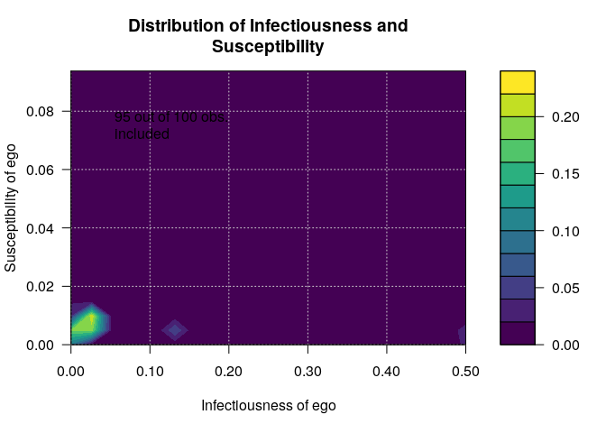
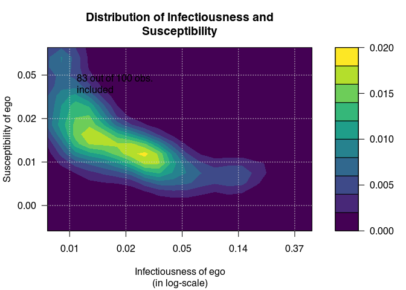
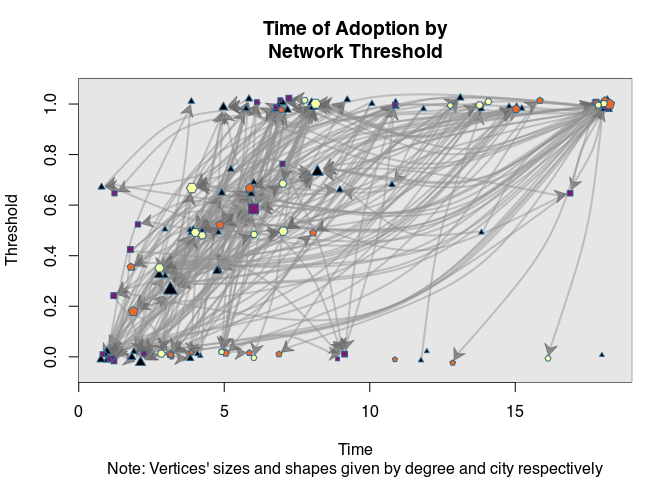
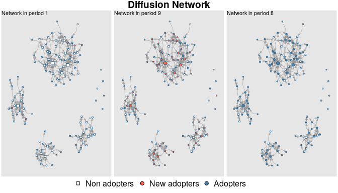
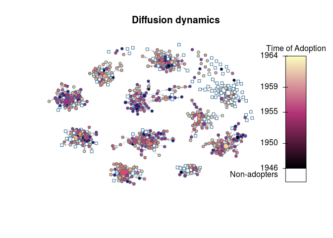
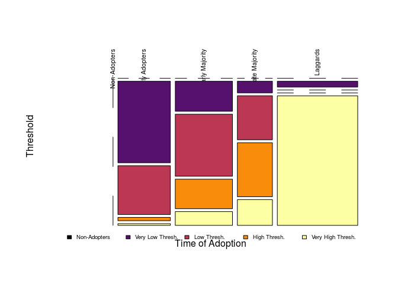

This package contains functions useful for analyzing network data for diffusion of innovations applications.
The package was developed as part of the paper Thomas W. Valente, Stephanie R. Dyal, Kar-Hai Chu, Heather Wipfli, Kayo Fujimoto, Diffusion of innovations theory applied to global tobacco control treaty ratification, Social Science & Medicine, Volume 145, November 2015, Pages 89-97, ISSN 0277-9536 (available here)
From the description:
Empirical statistical analysis, visualization and simulation of diffusion and contagion processes on networks. The package implements algorithms for calculating network diffusion statistics such as transmission rate, hazard rates, exposure models, network threshold levels, infectiousness (contagion), and susceptibility. The package is inspired by work published in Valente, et al., (2015) DOI:10.1016/j.socscimed.2015.10.001; Valente (1995) ISBN:9781881303213, Myers (2000) DOI:10.1086/303110, Iyengar and others (2011) DOI:10.1287/mksc.1100.0566, Burt (1987) DOI:10.1086/228667; among others.
Acknowledgements: netdiffuseR was created with the support of grant R01 CA157577 from the National Cancer Institute/National Institutes of Health.
News
Changelog can be view here.
- [2016-06-02] A video of the netdiffuseR workshop at SUNBELT 2016 is now online on youtube, and the workshop materials can be found here
- [2016-04-11] netdiffuseR will be on useR! 2016 on as a presentation and on IC2S2 2016 in the posters session.
- [2016-03-16] Next CRAN release scheduled for April 11th 2016 (after the workshop).
- [2016-02-18] netdiffuseR vers 1.16.2 is now on CRAN!
- [2016-02-18] We will be offering a workshop at the 2016 SUNBELT Conference (checkout the full list of workshops here).
Installation
Bleeding edge version
If you want the latest (unstable) version of netdiffuseR, using the devtools package, you can install netdiffuseR dev version as follows
You can skip building vignettes by setting build_vignettes = FALSE (so it is not required).
For the case of OSX users, there seems to be a problem when installing packages depending on Rcpp. This issue, developed here, can be solved by open the terminal and typing the following
curl -O http://r.research.att.com/libs/gfortran-4.8.2-darwin13.tar.bz2
sudo tar fvxz gfortran-4.8.2-darwin13.tar.bz2 -C /before installing the package through devtools.
Binary versions
For the case of windows and mac users, they can find binary versions of the package here, netdiffuseR_1…zip, and netdiffuseR_1…tgz respectively. They can install this directly as follows (using the 1.16.3.29 version):
-
Install dependencies from CRAN
-
Download the binary version and install it as follows:
For windows users, and for Mac users:
Tutorials
Since starting netdiffuseR, we have done a couple of workshops at Sunbelt and NASN. Here are the repositories:
- Sunbelt 2018: https://USCCANA.github.io/netdiffuser-sunbelt2018 (source code)
- NASN 2017: https://USCCANA.github.io/netdiffuser-nasn2017 (source code)
- Sunbelt 2016: https://github.com/USCCANA/netdiffuser-sunbelt2016
Presentations
- ic2s2 2016 Evanston, IL: https://github.com/USCCANA/netdiffuser-ic2s22016 (poster)
- useR! 2016 Stanford, CA: https://github.com/USCCANA/netdiffuser-user2016 (slides)
- useR! 2016: https://github.com/USCCANA/netdiffuser-user2016
Examples
This example has been taken from the package’s vignettes:
##
## Attaching package: 'netdiffuseR'
## The following object is masked from 'package:base':
##
## %*%Infectiousness and Susceptibility
# Generating a random graph
set.seed(1234)
n <- 100
nper <- 20
graph <- rgraph_er(n, nper, .5)
toa <- sample(c(1:(1+nper-1), NA), n, TRUE)
head(toa)## Dynamic network of class -diffnet-
## Name : Diffusion Network
## Behavior : Unspecified
## # of nodes : 100 (1, 2, 3, 4, 5, 6, 7, 8, ...)
## # of time periods : 20 (1 - 20)
## Type : directed
## Final prevalence : 0.95
## Static attributes : -
## Dynamic attributes : -## Diffusion network summary statistics
## Name : Diffusion Network
## Behavior : Unspecified
## -----------------------------------------------------------------------------
## Period Adopters Cum Adopt. (%) Hazard Rate Density Moran's I (sd)
## -------- ---------- ---------------- ------------- --------- ----------------
## 1 3 3 (0.03) - 0.50 -0.01 (0.00)
## 2 8 11 (0.11) 0.08 0.50 -0.01 (0.00)
## 3 4 15 (0.15) 0.04 0.51 -0.00 (0.00) *
## 4 1 16 (0.16) 0.01 0.49 -0.01 (0.00)
## 5 2 18 (0.18) 0.02 0.50 -0.01 (0.00)
## 6 5 23 (0.23) 0.06 0.50 -0.01 (0.00)
## 7 6 29 (0.29) 0.08 0.51 -0.01 (0.00)
## 8 1 30 (0.30) 0.01 0.50 -0.01 (0.00)
## 9 6 36 (0.36) 0.09 0.50 -0.01 (0.00)
## 10 5 41 (0.41) 0.08 0.49 -0.01 (0.00)
## 11 2 43 (0.43) 0.03 0.50 -0.02 (0.00) **
## 12 6 49 (0.49) 0.11 0.50 -0.01 (0.00)
## 13 4 53 (0.53) 0.08 0.50 -0.01 (0.00)
## 14 7 60 (0.60) 0.15 0.50 -0.01 (0.00)
## 15 7 67 (0.67) 0.17 0.50 -0.01 (0.00)
## 16 3 70 (0.70) 0.09 0.50 -0.01 (0.00)
## 17 10 80 (0.80) 0.33 0.49 -0.01 (0.00)
## 18 4 84 (0.84) 0.20 0.50 -0.01 (0.00)
## 19 2 86 (0.86) 0.12 0.50 -0.01 (0.00)
## 20 9 95 (0.95) 0.64 0.50 -0.01 (0.00)
## -----------------------------------------------------------------------------
## Left censoring : 0.03 (3)
## Right centoring : 0.05 (5)
## # of nodes : 100
##
## Moran's I was computed on contemporaneous autocorrelation using 1/geodesic
## values. Significane levels *** <= .01, ** <= .05, * <= .1.# Visualizing distribution of suscep/infect
out <- plot_infectsuscep(diffnet, bins = 20,K=5, logscale = FALSE, h=.01)
## Warning in plot_infectsuscep.list(graph$graph, graph$toa, t0, normalize, :
## When applying logscale some observations are missing.
Threshold
# Generating a random graph
set.seed(123)
diffnet <- rdiffnet(500, 20,
seed.nodes = "random",
rgraph.args = list(m=3),
threshold.dist = function(x) runif(1, .3, .7))
diffnet## Dynamic network of class -diffnet-
## Name : A diffusion network
## Behavior : Random contagion
## # of nodes : 500 (1, 2, 3, 4, 5, 6, 7, 8, ...)
## # of time periods : 20 (1 - 20)
## Type : directed
## Final prevalence : 0.60
## Static attributes : real_threshold (1)
## Dynamic attributes : -
Using more features
data("medInnovationsDiffNet")
set.seed(131)
plot_threshold(
medInnovationsDiffNet,
vertex.color = viridisLite::inferno(4)[medInnovationsDiffNet[["city"]]],
vertex.sides = medInnovationsDiffNet[["city"]] + 2,
sub = "Note: Vertices' sizes and shapes given by degree and city respectively",
jitter.factor = c(1,1), jitter.amount = c(.25,.025)
)## Warning in (function (graph, expo, toa, include_censored = FALSE, t0 =
## min(toa, : -vertex.sides- will be coerced to integer.
Diffusion process

diffnet.toa(brfarmersDiffNet)[brfarmersDiffNet$toa >= 1965] <- NA
plot_diffnet2(brfarmersDiffNet, vertex.size = "indegree")
set.seed(1231)
# Random scale-free diffusion network
x <- rdiffnet(1000, 4, seed.graph="scale-free", seed.p.adopt = .025,
rewire = FALSE, seed.nodes = "central",
rgraph.arg=list(self=FALSE, m=4),
threshold.dist = function(id) runif(1,.2,.4))
# Diffusion map (no random toa)
dm0 <- diffusionMap(x, kde2d.args=list(n=150, h=1), layout=igraph::layout_with_fr)
# Random
diffnet.toa(x) <- sample(x$toa, size = nnodes(x))
# Diffusion map (random toa)
dm1 <- diffusionMap(x, layout = dm0$coords, kde2d.args=list(n=150, h=.5))
oldpar <- par(no.readonly = TRUE)
col <- viridisLite::plasma(100)
par(mfrow=c(1,2), oma=c(1,0,0,0), cex=.8)
image(dm0, col=col, main="Non-random Times of Adoption\nAdoption from the core.")
image(dm1, col=col, main="Random Times of Adoption")
par(mfrow=c(1,1))
mtext("Both networks have the same distribution on times of adoption", 1,
outer = TRUE)
Adopters classification
## thr Non-Adopters Very Low Thresh. Low Thresh. High Thresh. Very High Thresh.
## toa
## Non-Adopters 0.00 0.00 0.00 0.00 0.00
## Early Adopters 0.00 14.04 8.40 0.57 0.29
## Early Majority 0.00 5.64 11.65 5.54 2.58
## Late Majority 0.00 1.34 5.06 6.21 2.96
## Laggards 0.00 1.53 0.00 0.00 34.19# Plotting
oldpar <- par(no.readonly = TRUE)
par(xpd=TRUE)
plot(out, color=viridisLite::inferno(5), las = 2, xlab="Time of Adoption",
ylab="Threshold", main="")
# Adding key
legend("bottom", legend = levels(out$thr), fill=viridisLite::inferno(5), horiz = TRUE,
cex=.6, bty="n", inset=c(0,-.1))
Session info
## R version 3.5.3 (2019-03-11)
## Platform: x86_64-pc-linux-gnu (64-bit)
## Running under: Ubuntu 16.04.6 LTS
##
## Matrix products: default
## BLAS: /usr/lib/libblas/libblas.so.3.6.0
## LAPACK: /usr/lib/lapack/liblapack.so.3.6.0
##
## locale:
## [1] LC_CTYPE=en_US.UTF-8 LC_NUMERIC=C
## [3] LC_TIME=en_US.UTF-8 LC_COLLATE=en_US.UTF-8
## [5] LC_MONETARY=en_US.UTF-8 LC_MESSAGES=en_US.UTF-8
## [7] LC_PAPER=en_US.UTF-8 LC_NAME=C
## [9] LC_ADDRESS=C LC_TELEPHONE=C
## [11] LC_MEASUREMENT=en_US.UTF-8 LC_IDENTIFICATION=C
##
## attached base packages:
## [1] stats graphics grDevices utils datasets methods base
##
## other attached packages:
## [1] netdiffuseR_1.20.0
##
## loaded via a namespace (and not attached):
## [1] igraph_1.2.2 Rcpp_1.0.0 knitr_1.21
## [4] magrittr_1.5 network_1.13.0.1 networkDynamic_0.9.0
## [7] MASS_7.3-51.1 viridisLite_0.3.0 lattice_0.20-38
## [10] stringr_1.3.1 tools_3.5.3 MatchIt_3.0.2
## [13] grid_3.5.3 xfun_0.4 sna_2.4
## [16] coda_0.19-2 htmltools_0.3.6 yaml_2.2.0
## [19] digest_0.6.18 Matrix_1.2-16 evaluate_0.12
## [22] rmarkdown_1.11 statnet.common_4.1.4 stringi_1.2.4
## [25] compiler_3.5.3 boot_1.3-20 SparseM_1.77
## [28] pkgconfig_2.0.2To-do list
- Import/Export functions for interfacing other package’s clases, in particular:
statnetset (specially the packagesnetworkDynamicandndtv),igraphRsiena. - Populate the tests folder.
Use spells? (select_egoalterwould use this)Classify individuals by adoption category using early adopters, adopters, and laggards, and by threshold using very low, low, high and very high threshold (Valente 95’ p. 94).Double check all functions using adjacency matrix values.Remove dimnames from matrices and vectors. It is more efficient to use the ones stored in meta instead.- Implement the Bass model
Include function to import survey data (as shown on the vignettes)- Exposure based on Mahalanobis distances and also Roger Leenders on weighting exposure (internal note).
- (2016-03-30): use
xsplinefor drawing polygons & edges. (2016-04-04): Add more options toexposure, namely,self(so removes diagonal or not!).- (2016-04-19): animal behaviorists.
- (2016-10-18): Review language throughout the manual (more than innovation).
- (2016-10-18): Evaluate and eventually use a standard graph format (
networkfor instance?). - (2016-10-18): Standarize graph plot methods (choose either statnet/igraph/own)